Introduction
The Kapisanan sa Pag-Iimpok at Paghihiram ng mga Kawani ng Pamahalaang Lungsod Quezon (KAPAMALQ) System is designed to manage core functions such as facilitating member loan withdrawals, tracking savings details, updating transaction records, and maintaining an overview of the loan portfolio, among other essential operations.
System Requirements
- Operating System: Windows 10 (64-bit) version 1909 or later, or Windows 11.
- CPU: Intel Core i5 (8th generation or newer) or AMD Ryzen 5 equivalent.
- Storage: 256GB total capacity (or higher) with 50GB free space recommended.
- RAM: 8GB minimum, 16GB recommended for optimal performance.
- Network: Local Area Network (LAN) with minimum 100 Mbps speed (1 Gbps recommended).
Installation Instructions
Prerequisites
Ensure the following network settings are configured on your system:
- IPv4 Address:
192.168.1.111 - Subnet Mask:
255.255.255.0 - Default Gateway:
192.168.1.1 - Preferred DNS Server:
192.168.1.1
Steps to Configure Network Settings (if not already set):
- Open the Control Panel.
- Navigate to Network and Sharing Center > Change adapter settings.
- Right-click your active network connection and select Properties.
- Select Internet Protocol Version 4 (TCP/IPv4) and click Properties.
- Manually input the settings above.
- Click OK to save and exit.
Installing WampServer
- Download WampServer: Visit the official WampServer website and download the latest version compatible with your operating system.
- Run the Installer: Double-click the downloaded executable file to start the installation process. Follow the on-screen instructions. Use the default installation directory (usually
C:\wamp64). - Configure Apache Server: During installation, you may be prompted to select your default browser. Choose your preferred browser or skip this step to use the default. If required, allow Apache Server through the Windows Firewall: open Windows Security > Firewall & network protection, click Allow an app through the firewall, locate "Apache HTTP Server" in the list and ensure both "Private" and "Public" are checked.
- Set Up Apache Port: It is best practice to use a 4-digit port number, such as 1962. Open
C:\wamp64\bin\apache\apache2.4.9\conf\httpd.confin a text editor, locateListen 80and replace it withListen 0.0.0.0:1962andListen [::0]:1962, then save and close the file. Additionally, openC:\wamp64\wampmanager.tplandC:\wamp64\wampmanager.iniwith Notepad/Notepad++, search forhttp://localhost/(CTRL+F) and replace all occurrences withhttp://localhost:1962/. Save and close the files. - Make WAMP Accessible to Network: Open
C:\wamp64\bin\apache\apache2.4.9\conf\httpd.confand ensure the following settings in the<Directory />section:<Directory /> AllowOverride all Require all granted </Directory>
Save and close the file. - Complete Installation: Finish the setup and launch WampServer. The WampServer icon in the system tray should turn green, indicating all services are running.
Installing MySQL
- Download MySQL Installer: Visit the official MySQL website and download the "MySQL Installer for Windows."
- Run the Installer: Start the installation process by running the downloaded installer. Select the "Custom" installation type and include "MySQL Server" and "MySQL Workbench" in your selection.
- Configure MySQL Server: Set up a new MySQL Server instance using Standalone MySQL Server as the configuration type. Choose the default port (3306). Set a strong root password and optionally create additional user accounts.
- Start MySQL Server: Complete the installation and start the MySQL Server. Test the connection using MySQL Workbench or the command line.
- Make MySQL Accessible to Network: Open
C:\wamp64\alias\phpmyadmin.confin a text editor and update the configuration to:AllowOverride all Require local Order Deny,Allow Deny from all Allow from localhost ::1 127.0.0.1 Allow from 112.200.0.0/16
Save and close the file.
Installing Visual C++ Redistributable (vcredist_x64.exe)
- Download Visual C++ Redistributable: Visit the Microsoft Download Center and download the latest version of
vcredist_x64.exe. - Run the Installer: Double-click the downloaded executable file to start the installation. Accept the license agreement and click Install. Wait for the installation to complete.
Post-Installation Verification
- Verify WampServer: Check the WampServer icon in the system tray — it should be green, indicating that all services are running. Open a web browser and navigate to
http://localhost/. The WampServer homepage should appear. - Verify phpMyAdmin: Open a web browser and navigate to
http://localhost/phpmyadmin/. Log in using the MySQL root credentials set during the installation. Make sure that you can access and manage the MySQL databases.
Setting Root Password for MySQL
By default, the WAMP bundle does not set a password for the MySQL root user. Follow these steps to set a root password:
- Open MySQL Console: Click the WampServer icon in the system tray, select MySQL > MySQL Console, and press Enter when prompted for a password (as none is set by default).
- Set Root Password: At the
mysql>prompt, type the following command and press Enter:SET PASSWORD FOR root@localhost = PASSWORD('EnterYourPasswordHere');Replace EnterYourPasswordHere with your desired password. - Update phpMyAdmin Configuration: Navigate to the WampServer phpMyAdmin folder (e.g.
C:\wamp64\apps\phpmyadmin\), openconfig.inc.phpin a text editor, find the line$cfg['Servers'][$i]['password'] = '';
and update it to include your root password. Ensure AllowNoPassword is set to false:$cfg['Servers'][$i]['AllowNoPassword'] = false;
Save and close the file.
Additional Configurations
- Edit my.ini: Open
C:\wamp64\bin\mysql\mysql5.x.x\my.iniand update thepasswordandlc-messageslines with your root password and preferred locale (e.g.lc-messages=en_PH). - Enable Number Formatter (PHP intl): Copy files starting with
icu*from<wamp_installation_path>/bin/php/php5.4.3/to<wamp_installation_path>/bin/apache/apache2.2.22/bin/. Openphp.iniand enable the intl extension:extension=php_intl.dll
Restart WampServer. - Change Default Timezone in WAMP: Open
php.ini, search fordate.timezoneand replace it with your preferred timezone, e.g.date.timezone = Asia/Singapore
Start WAMP on Boot Up
The best way to ensure WampServer starts automatically upon system boot is to schedule a task that runs at user logon:
- Open Task Scheduler: Press Win + S, search for Task Scheduler and open it.
- Create a New Task: Click Create Task in the right-hand panel.
- Configure General Settings: Name the task WampServer and check Run with highest privileges.
- Set Trigger to Start Task at Logon: Go to the Triggers tab, click New, set the trigger to Begin the task: At log on, and click OK.
- Define the Action to Start WAMP: Go to the Actions tab, click New, select Start a program, browse to
C:\wamp64\wampmanager.exeand set the Start in field toC:\wamp64. Click OK. - Set Task Conditions: In the Conditions tab, uncheck Start the task only if the computer is on AC power and Stop the task if it runs longer than [x hours/minutes].
- Finalize and Restart: Click OK to save the task, close Task Scheduler, and restart your computer to test the configuration.
Alternative Method: Using Services
- Press Win + R, type
services.mscand press Enter to open the Services window. - Locate the services
wampapache64(Apache) andwampmysqld64(MySQL). - For each service: right-click, select Properties, set the Startup type to Automatic, then click Apply and OK.
- Restart your computer to verify both services start automatically.
User Interface Overview
I. Credit / Loaning System
The Credit / Loaning System interface is divided into two primary sections for ease of use: Members and Transactions.
1. Members
The Members section is focused on managing member information and related administrative tasks:
- Add New Member: Enables the addition of a new member to the system.
- Update Member: Facilitates the modification of an existing member's details.
- Edit Account Number: Allows changes to a member's account number.
- Edit Member Name: Provides the option to update member names.
- Edit Office Name: Updates the office name linked to a member's account.
- View Member Details: Displays comprehensive details for a selected member.
- Add/Update Co-Maker: Adds or updates co-makers associated with a member's account.
- Account Master List: Shows a complete list of all accounts within the system.
- Set to Inactive: Deactivates a member's account while retaining their records.
- Fixed Capital Contribution (CC) Office: Determines the fixed Capital Contribution (CC) of the members per office.
- Exceed Capital Contribution (CC) Buffer: Monitors and highlights when a predefined Capital Contribution (CC) buffer is exceeded. The EXCEED COUNT is prominently displayed for quick reference.
- Passbook Printing: Enables the printing of a member's passbook for transaction tracking.
- Ex-Member Account: Manages the accounts of former members.
2. Transactions
The Transactions section is dedicated to managing financial transactions and approvals:
- Loan: Facilitates the processing and evaluation of loan applications, including assessing the borrower's capacity to repay for regular and emergency loans, as well as ensuring compliance with the single borrower's limit (SBL).
- Withdraw: Facilitates fund withdrawal transactions.
- Verification: Ensures transaction details are accurate and complete. Flagged items, if any, are highlighted for attention.
- Voucher: Manages transaction vouchers, including generation and review.
- Withdrawal List: Displays a detailed list of withdrawal transactions.
- Edit Transactions: Allows authorized users to modify transaction details as needed.
- Post Audit: Displays audit-related items for review and action.
- Approval: Handles pending approvals for loans and other transactions.
- Monitor Status: Tracks the progress and status of loans, withdrawals, and other transactions.
- Check List: Provides a detailed checklist to verify transaction accuracy and compliance.
- Regular Inquiry: A general tool for accessing account and transaction information. Regular loans range from P5,000 – P250,000 (loan sample computation including the interest-of-loan, IOL).
- Emergency Inquiry: Specialized for urgent account or transaction-related inquiries. Emergency loans range from P5,000 – P15,000 (loan sample computation including the interest-of-loan, IOL).
- Print EIR: Prints the Effective Interest Rate (EIR) report for loans or transactions.
- Declaration Form: Generates a Membership Declaration Form (MDF) for fixed capital contribution.
- Consent Slip: Prints or updates standard consent slips. The consent slip signifies the member's agreement to have insurance payments for the regular loan deducted directly from their salary.
- Emergency Consent Slip: Prepares consent slips for emergency transactions. The consent slip signifies the member's agreement to have insurance payments for the emergency loan deducted directly from their salary.
- Slip Print/Edit/Delete: Manages printing, editing, or deleting various transaction slips.
- Emergency Loan (EL) Slip Print/Edit/Delete: Manages printing, editing, or deleting various emergency loan (EL) transaction slips.
Loan Summary
The Loan Summary Section provides a consolidated view of loan activities for the year, categorized into Regular Loans and Emergency Loans. It highlights the total amounts disbursed and the corresponding net amounts collected, enabling efficient monitoring and analysis of loan performance.
- View Loan: Displays detailed information about individual loans, including borrower details, loan type, repayment terms, and current status. These include the member's office, name, age, loan date, check no., maturity date, amortization, disbursement voucher (DV), promissory note (PN), capacity excess, loan amount and net amount (for both regular and emergency loans).
- View Loan Summary: Presents an aggregated summary of all loans within a selected timeframe, broken down by month and loan type.
Loan Summary Table Overview
The loan summary table provides a monthly breakdown of loan data with the following components:
- Month (Accountability): Indicates the specific month for which the loan transactions are recorded.
- Regular Loans: Amount — the total loan amount disbursed under regular loan programs during the month; Net — the actual net amount provided to members.
- Emergency Loans: Amount — the total loan amount disbursed under emergency loan programs during the month; Net — the actual net amount collected from repayments of emergency loans during the month.
- Total Month: Combines the total loan disbursement (amount) and actual amount (net) of loan provided from both regular and emergency loans for the respective month.
- Annual Summary: Regular Loans: total amount and total net for the year. Emergency Loans: total amount and total net for the year. Grand Total: aggregates the total disbursed loans (Amount) and total collections (Net) from both loan types for the entire year.
II. Accounting System
The Accounting System interface is designed for efficient financial management. It is divided into two sections:
1. Transactions
- Post Remittance: Processes the posting of remittances into the system. This also posts the transaction in the member's ledger which includes the official receipt (OR), remittances, acknowledgement receipt and general adjustment.
- Death Benefit (DB) Deduction: Handles deductions related to death benefits.
- Dividend (Cash/Check): Manages and calculates member dividends, including the master list for dividend computation.
- Check Remittance: Verifies and reviews remittance details per office.
- Death Benefit List: Displays and manages the list of members' beneficiary/ies, including the details and amount that the beneficiary will receive.
- Print Dividend Check: Prints the list of dividend checks of members for distribution.
- Cash Receipt: Records cash receipts into the system.
- Edit/Delete Receipt: Allows modifications or deletions of recorded receipts.
- Cash Disbursement: Handles cash disbursement transactions.
- Edit/Delete Disbursement: Enables editing or deletion of recorded disbursements.
- Adjustments: Processes financial adjustments on a monthly basis.
- Edit Request: Manages pending edit requests for transactions, with notifications for flagged items.
- SOA Summary: Displays a consolidated summary of the Statement of Accounts (SOA).
- Capital Contribution (CC) – SOA per Office: Generates SOA reports specific to each Capital Contribution.
- Regular Loan (RL) – SOA per Office: Provides SOA reports for RL (Regular Loan) categorized by office.
- Emergency Loan (EL) – SOA per Office: Prepares SOA reports for EL (Emergency Loan) by office.
- Create Voucher: Enables the creation of vouchers for financial/disbursement transactions.
- Voucher List: Displays a list of all created vouchers for reference or review.
2. Reporting
- Remittance Reports: Generates detailed reports of remittances.
- Past Due Reports: Highlights accounts or transactions that are overdue.
- Trial Balance: Displays the trial balance for account reconciliation.
- Financial Statements: Prepares comprehensive financial statements.
- SOA of TB Accounts: Generates the Statement of Accounts for Trial Balance accounts.
- Add Account Title: Allows the addition of new account titles.
III. Payroll System
The Payroll System focuses on managing employee payroll and related deductions:
- Payroll: Processes employee payrolls, including salary calculations and distribution.
- Statement of Deductions: Generates detailed statements outlining all employee deductions: SSS Loan, SSS Contributions, Pag-ibig Loan, Pag-ibig Contribution, Philhealth Contribution, Due from Employees & Officers, and KAPAMALQ deposit and loans (Regular/Emergency Loans if any).
IV. Scanned Files (Document Archival)
The Scanned Files provides a centralized location for managing scanned documents:
- Scanned Files: Stores, retrieves, and organizes scanned files for quick access and reference. For scanning are board resolutions, 201 files, individual vouchers, member's KYC, minutes of the meetings, office voucher and other transactions.
Remittance
The Remittance Section provides tools to track and analyze remittance records obtained from the accounting department. Users can monitor remittance details such as:
- Month (Accountability): Displays the specific month tied to the remittance.
- Date Remit: Shows the date on which the remittance was transmitted.
- OR Number: Refers to the official receipt number associated with the transaction.
- Amount: Indicates the remitted amount for the corresponding month.
These records, sourced from the accounting department, allow for accurate financial tracking and reconciliation.
- Renew List: Enables users to view and manage accounts that are due for renewal. This feature is essential for maintaining updated records and ensuring account activity.
- Loan Amort List: Provides detailed information about loan amortizations, helping users keep track of repayments and balances for active loans.
- Membership List: Displays a comprehensive list of all active members, allowing for quick access to member details and statuses.
- KYC Summary: The KYC (Know Your Customer) Summary provides an overview of member verification and compliance status. This ensures adherence to regulatory requirements and enhances member data integrity.
- Update Board Members: Facilitates the management and modification of board member details, ensuring the system reflects the current governance structure.
Using the KAPAMALQ System
I. Logging In to the System
- To use the KAPAMALQ System, kindly enter the appropriate username and password. After that, click the SUBMIT button.
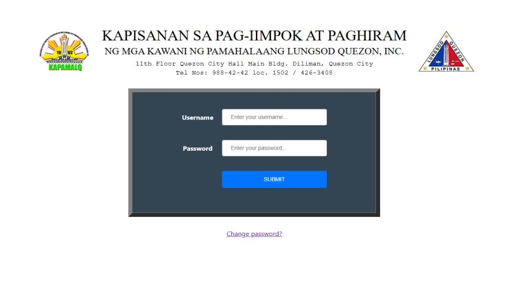
II. Adding Members to the System
- To add a member's profile, go and click the ADD MEMBER button.
- The assigned personnel will input the necessary details prior to the member's information.
- Once done, click the SAVE AND ADD MEMBER button.

III. Updating Member's Profile
- To update a member's profile, go and click the UPDATE MEMBER button.
- Click the MEMBER NAME dropdown menu to select the name of the member, then click the SEARCH button to proceed.
- The assigned personnel can now update the member's profile.
- Once done, click the SAVE AND ADD MEMBER button.
NOTE: Only authorized staff can modify/update the members' information.

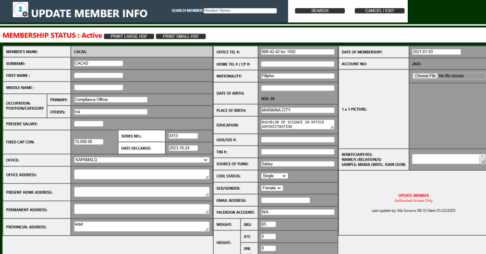
IV. Edit Account Number / Member Name / Office Name
- To edit/update an account number, member's name or office name, click either the EDIT ACCOUNT NUMBER, EDIT MEMBER NAME or EDIT OFFICE NAME button.
- Click the MEMBER NAME dropdown menu to select the name of the member, then click the SEARCH button.
NOTE: The EDIT ACCOUNT NUMBER, EDIT MEMBER NAME and EDIT OFFICE NAME have the same query page albeit different functions.
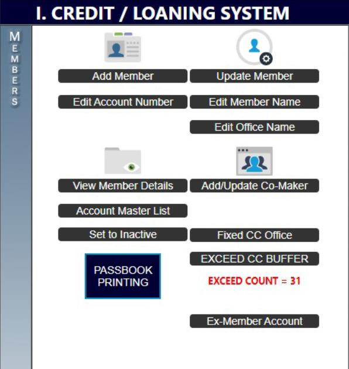
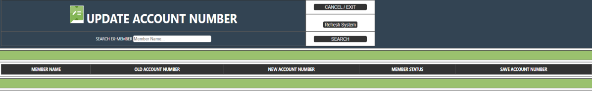
V. View Member Details
- To view the members' details, go and click the VIEW MEMBER DETAILS button.
- Click the MEMBER NAME dropdown menu to select the name of the member, then click the SEARCH button to proceed.
- From here, the user can view the member's account details such as: (a) Capital Contributions, (b) Consumption Loans, (c) Emergency Loans, and (d) Adjustments.

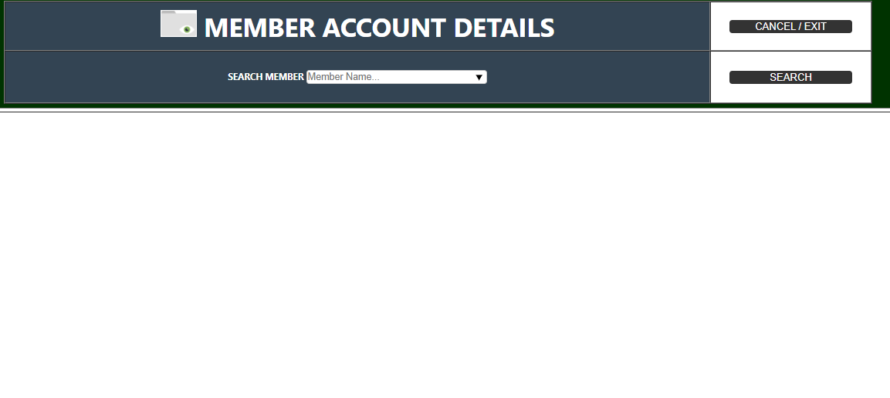
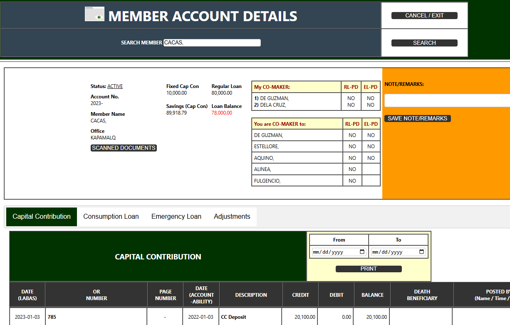
VI. Account Master List
- To view the Account Master List, go and click the ACCOUNT MASTER LIST button.
- To start, first select the desired OFFICE.
- Once done, click on the SEARCH button to view the master list of the selected office.

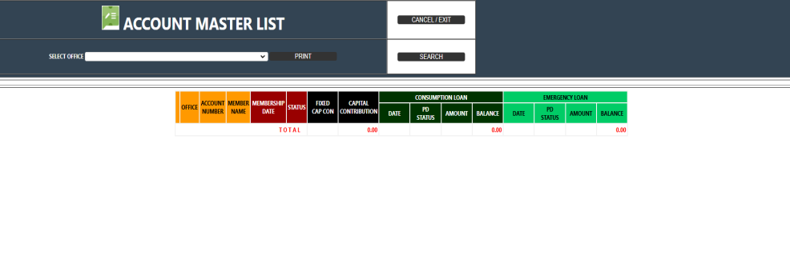
VII. Add/Update Co-Maker
- To add or update the Co-Makers, click on the ADD/UPDATE CO-MAKER button.
- Select the member's name, select the desired office, then click the SEARCH button to proceed.
- This will display the details of the member with their respective co-makers. The staff will then add or update the member's co-maker as per the request of the member. Once done, they can simply save afterwards.

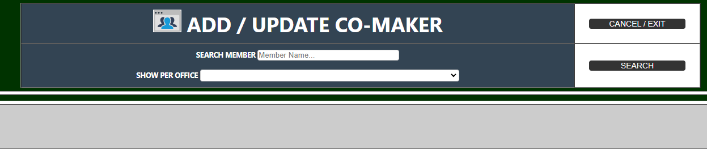
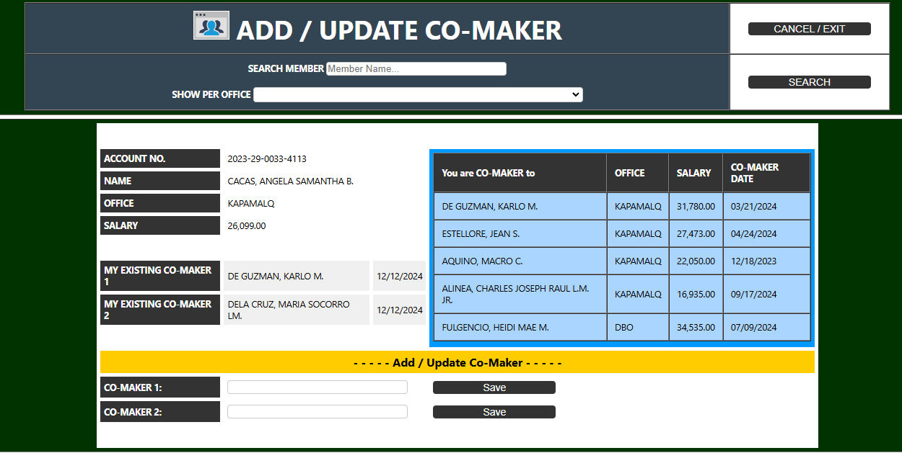
VIII. Fixed CC Office & Exceed CC Buffer
- To access the Fixed CC Office, click the FIXED CC OFFICE button; otherwise, to access the Exceed CC Buffer, click the EXCEED CC BUFFER button.
- First select the desired OFFICE, then click the SEARCH button to display the accounts of the designated office.
- Excess Cap Con displays all the members with excess capital contribution.

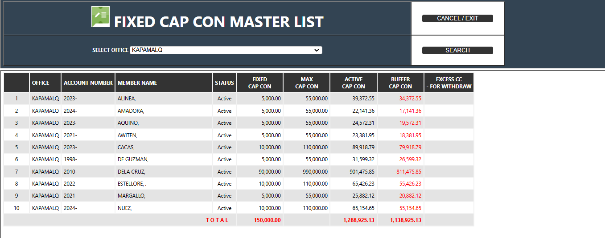
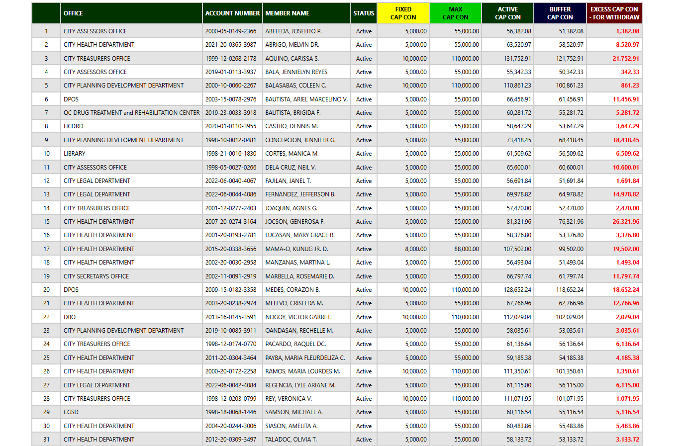
IX. Ex-Member Account
- To view the Ex-Member Account List, go and click the EX-MEMBER ACCOUNT button.
- To view the list of Ex-Members' Accounts, go and click the LIST EX-MEMBER ACCOUNT button.
- A list will appear showing all of the ex-members of KAPAMALQ.

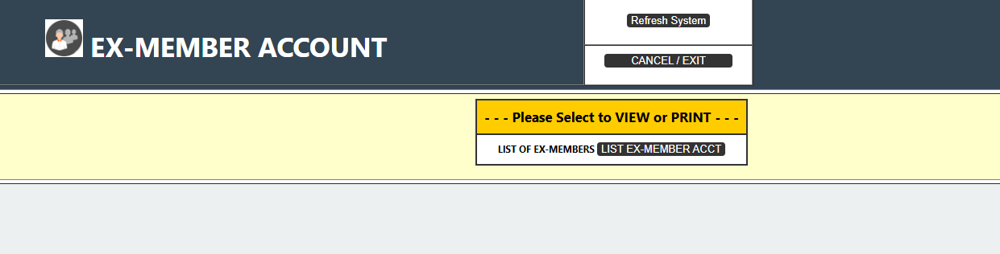
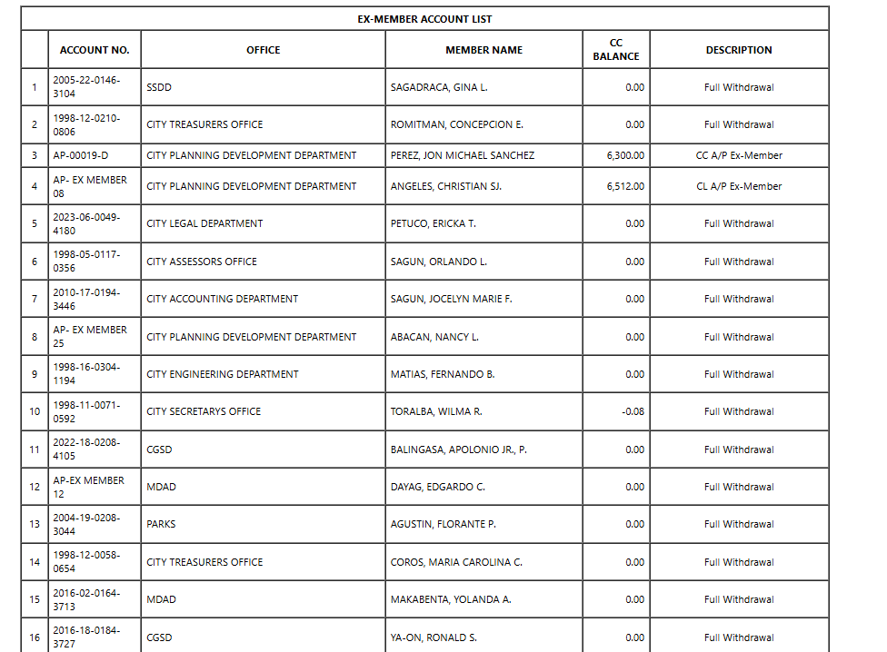
X. Passbook Printing
- To access the Passbook Printing page, go and click the PASSBOOK PRINTING button.
- First, type in the name of the member and hit the SEARCH button.
- Once the details of the member appear, set the inclusive dates to proceed with the printing.
- Once done, click PRINT to proceed.

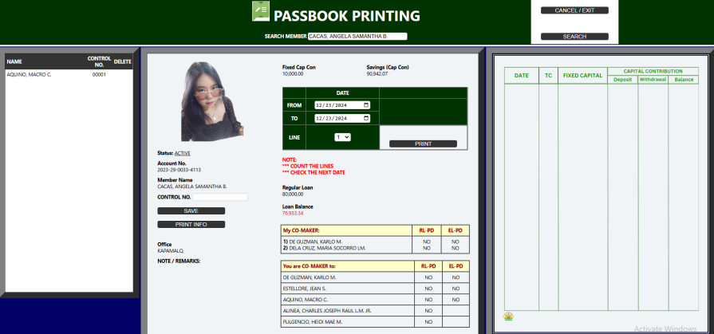
XI. Loan
- To access the Loan page, go and click the LOAN button.
- First, type in the name of the member and hit the SEARCH button.
- The details of the member will appear. The staff will encode the "capacity to pay of the borrower" first, in order to assess the financial capability of the employee to pay for their loan/s.
- Once done, click SAVE CAPACITY.
- After that, click the PRINT SBL/CTP.
- Finally, the staff will ask what kind of loan the member will avail: whether regular or emergency loan.
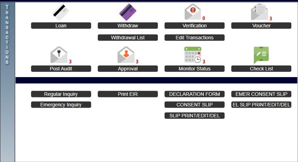
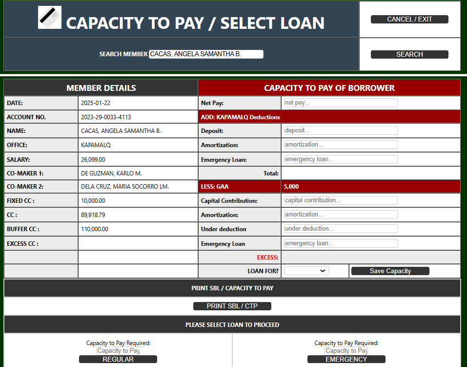
XII. Withdrawal Application Form
- To access the Withdrawal Page, go and click the WITHDRAW button.
- To start, first select the MEMBER'S NAME, then click on the SEARCH button to open the WITHDRAWAL APPLICATION FORM.
- Once on the Withdrawal Application Form, the user can now calculate the member's withdrawal — either Partial or Full withdrawal.
- Once done, the user will select the proper individual that will verify the member's withdrawal computation.
- Click the SAVE / PROCESS button to proceed and print the computation.
- A printout will appear containing the breakdown of the member's allowable withdrawal amount.

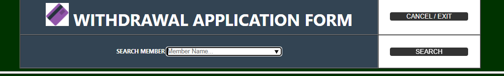
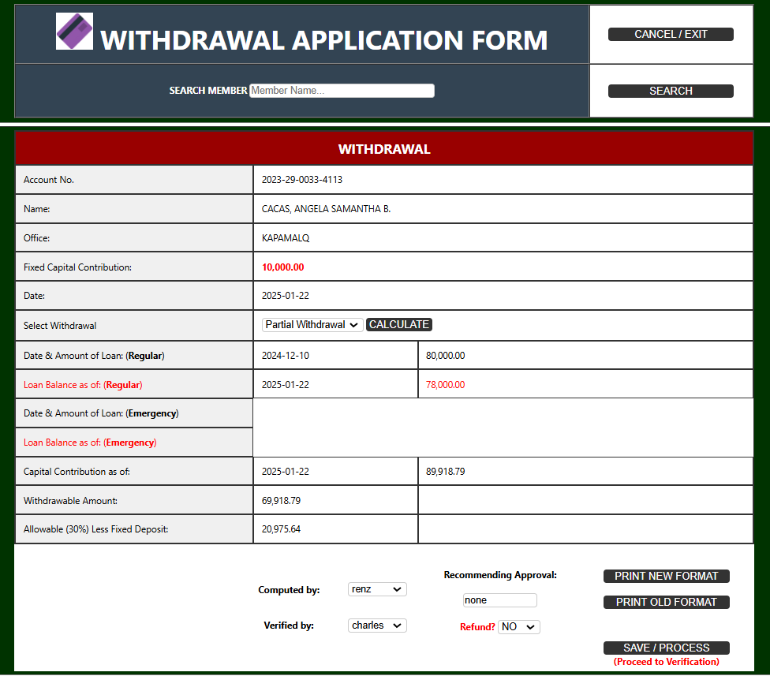
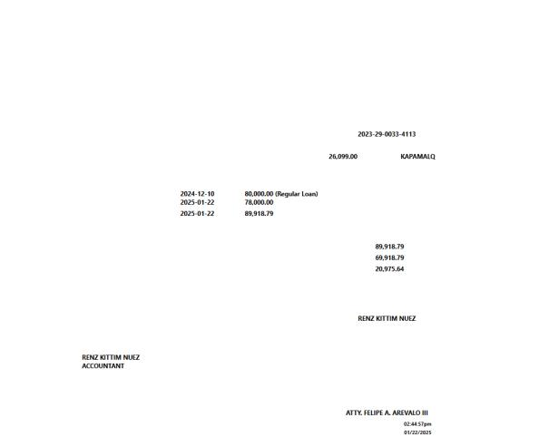
XIII. Withdrawal List
- To access the withdrawal list, go and click the WITHDRAWAL LIST button.
- On the withdrawal list, the staff has the ability to view the withdrawal amount released for the particular MONTH and YEAR for all the departments.

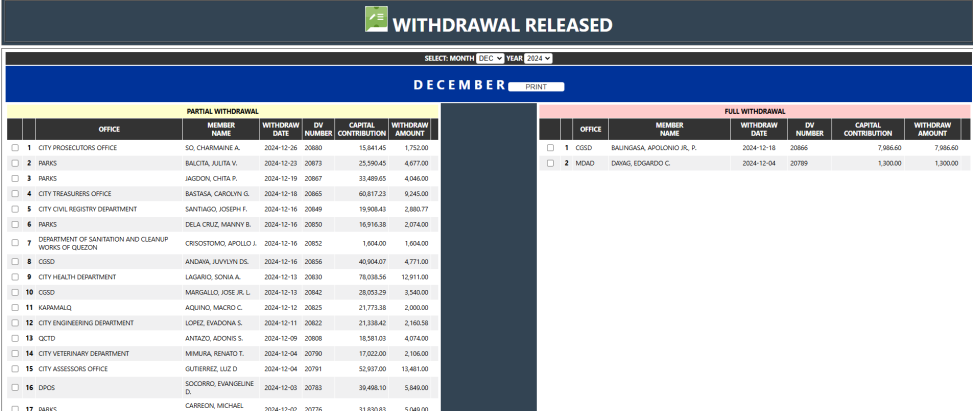
XIV. Verification
- To access the verification page, go and click the VERIFICATION button.
- The verification of transaction pertains to verifying if the transactions done are correct. If it is correct, click the VERIFY button; otherwise, click the CANCEL button.

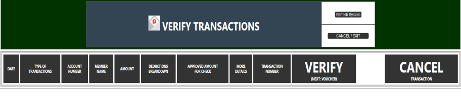
XV. Edit Transaction
- To access the edit transaction page, go and click the EDIT TRANSACTION button.
- Search for the member's name, then click the SEARCH button to proceed and modify the transaction/s.

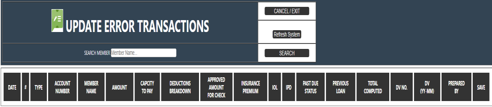
XVI. Voucher
- To access the voucher page, go and click the VOUCHER button.
- Once the voucher has been verified, it can now be printed. It will be verified again before it can proceed to printing the voucher.

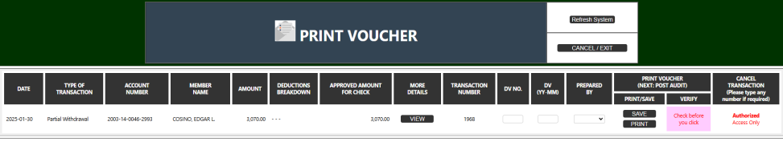
XVII. Post Audit
- To access the post audit page, go and click the POST AUDIT button.
- Post Audit Verification is done by checking the account entries by the accountant.

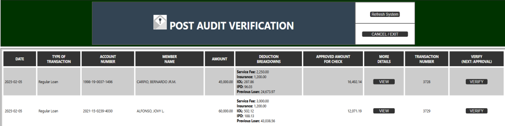
XVIII. Approval
- To access the approval page, go and click the APPROVAL button.
- Approval of transaction is done by verification and approval of loan by the manager. This is the final step to generate the voucher.

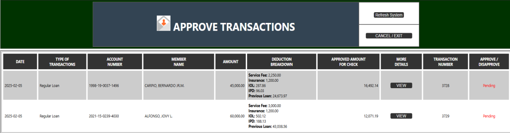
XIX. Monitor Status
- To access the monitor status page, go and click the MONITOR STATUS button.
- Monitoring the transaction status also refers to tracking the transaction. Once done, the voucher will then be printed by the cashier.

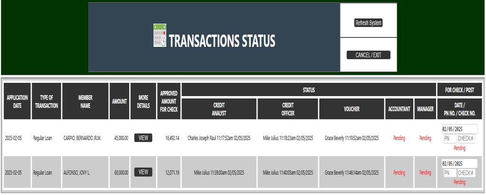
XX. Check List
- To access the check list page, go and click the CHECK LIST button.
- To start, manually encode all the necessary details.
- Click the SAVE button to proceed. This will display all the transaction details.
- In order to print the report transactions, set the FROM & TO fields and click the PRINT TRANSACTIONS button.

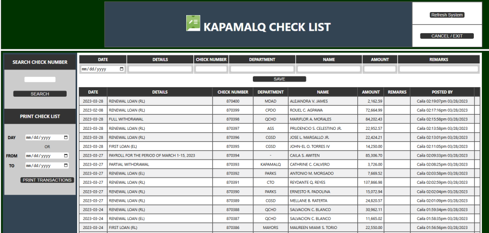
XXI. Regular Inquiry & Emergency Inquiry
- To access the regular loan or emergency loan inquiry, go and click either the REGULAR INQUIRY or EMERGENCY INQUIRY button.
- Once inside the Regular Inquiry or Emergency Inquiry page, the "LOAN SAMPLE COMPUTATION" page will appear. Search for the name of the member and click the SEARCH button.
- Once done, click the CALCULATE LOAN button to display the member/applicant's qualification and capacity to borrow. Through this, the staff will assess the amount given to the member.
- A sample computation will then be displayed to see the breakdown of the sample loan that the member could avail.

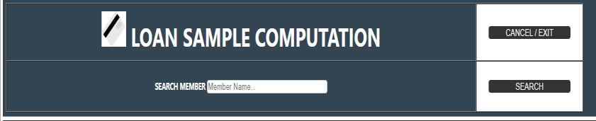
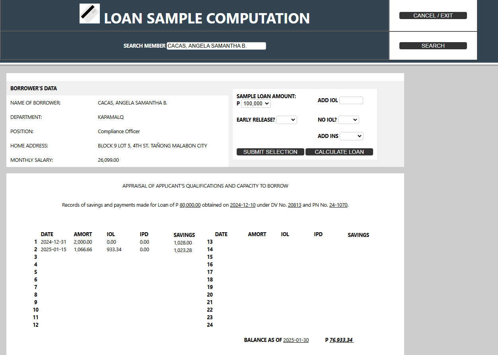
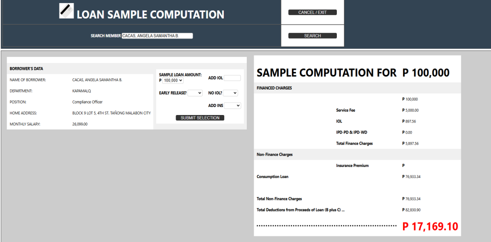
XXII. Print EIR
- To access the print EIR page, go and click the PRINT EIR button.
- First, search for the member's name and provide the necessary details of their particular loan, then click the SEARCH button.
- A breakdown of the loan calculation will appear. Once verified, simply click the PRINT EIR button.

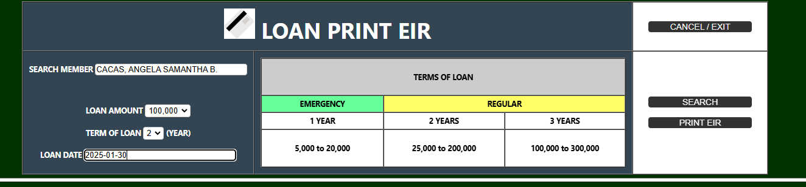
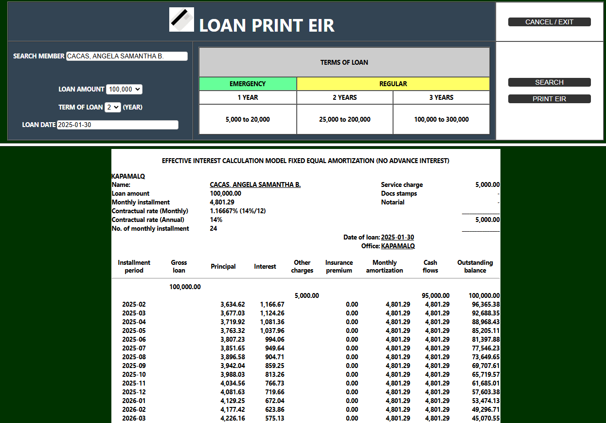
XXIII. Declaration Form, Consent Slip, Emergency Consent Slip and Editing of Slips
- To access the declaration and consent slips page, use the corresponding buttons in the Transactions section.
- First, search the name of the member, then click the SEARCH button to start the search. The declaration form will appear and is ready for printing.
- The same process is also done in printing the CONSENT SLIP and the EMERGENCY CONSENT SLIP: search the name of the member and click the SEARCH button.
- A consent slip to deduct for the monthly loan amortization of the cooperative will be ready for printing afterwards. Click the SAVE button.
- Modifying and printing consent slips is done through either EL SLIP PRINT/EDIT/DEL for emergency loans or SLIP PRINT/EDIT/DEL for regular loans.
NOTE: The same process is also done in the EMER CONSENT SLIP.

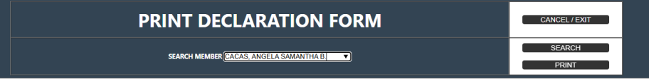
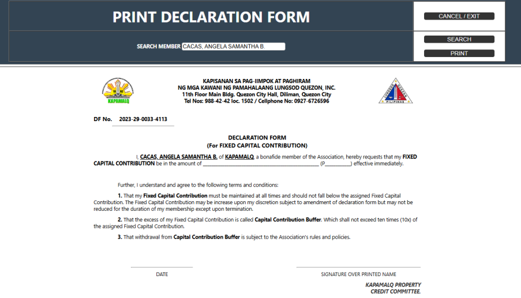
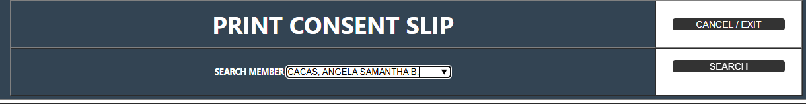
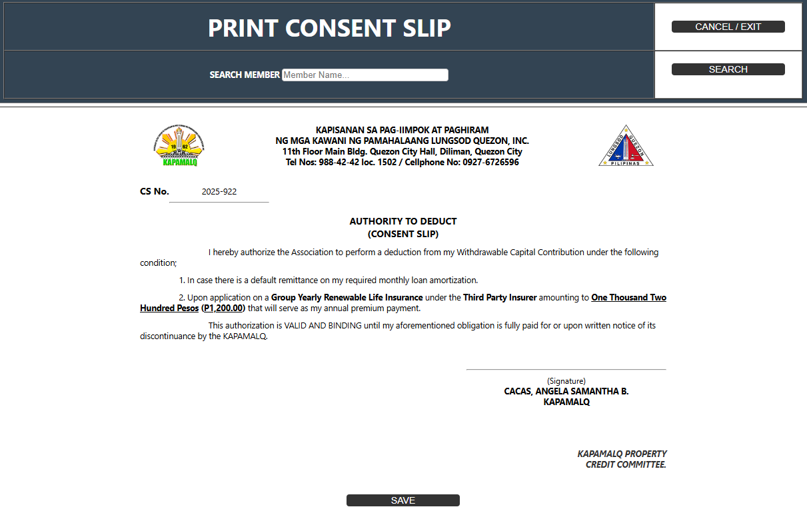
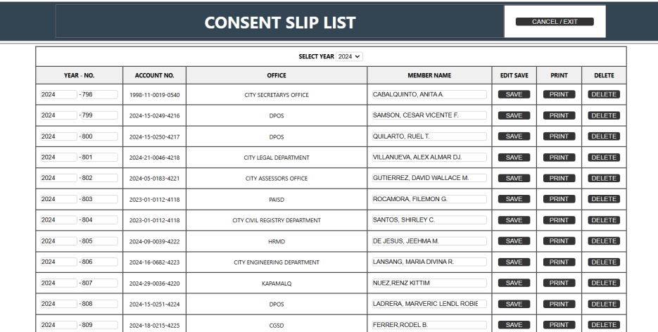
XXIV. Post Remittance
- To access the post remittance page, click the POST REMITTANCE button.
- First, search for the member and click the SEARCH button to proceed.
- On this page, the staff can also add/update the Capital Contribution, Consumption Loan, Emergency Loan and Adjustments of the member.

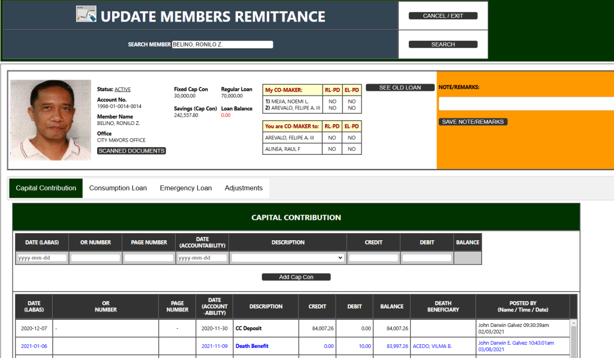
XXV. Check Remittance
- To access the check remittance page, click the CHECK REMITTANCE button.
- Select the OR Number (month) and the desired office in the dropdown menus.
- Click the SEARCH button to view the details of remittances.

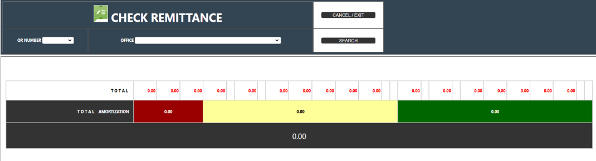
XXVI. DB Deduction
- To access the DB Deduction page, click the DB DEDUCTION button.
- Search for the MEMBER NAME and click the SEARCH button to proceed.

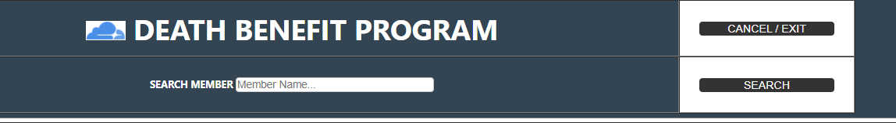
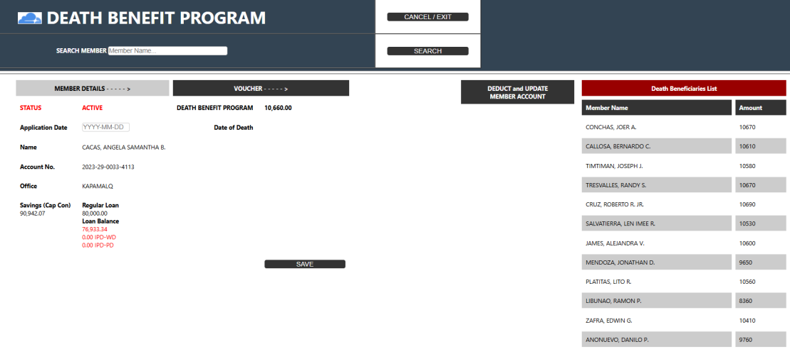
XXVII. Death Benefit List
- To access the death benefit list, click on the DEATH BENEFIT LIST button.
- The death benefit list summarizes deceased members' details and their corresponding death benefits received.

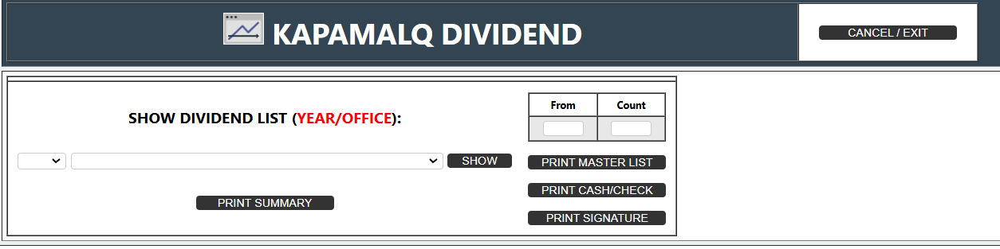
XXVIII. Dividend
- To access the dividend page, click the DIVIDEND button.
- First select the year from the dropdown menu, then click the SHOW button in order to proceed.
- This page provides for the printing and computation of dividends of the members.
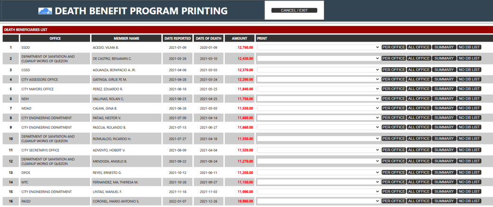
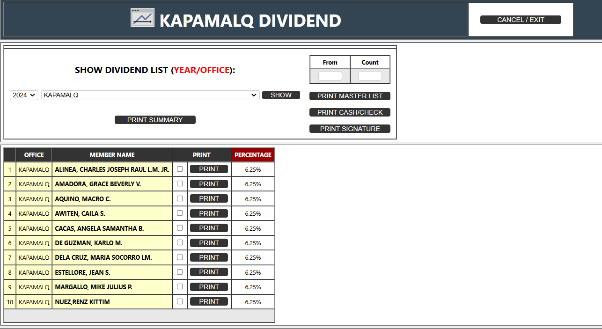
XXIX. Print Dividend Check
- To access the printing of dividend check page, click the PRINT DIVIDEND CHECK button.
- Select the YEAR and OFFICE from the dropdown menu.
- Click SHOW to show the list of members.
- Click the PRINT CHECK button to print the check of the members.

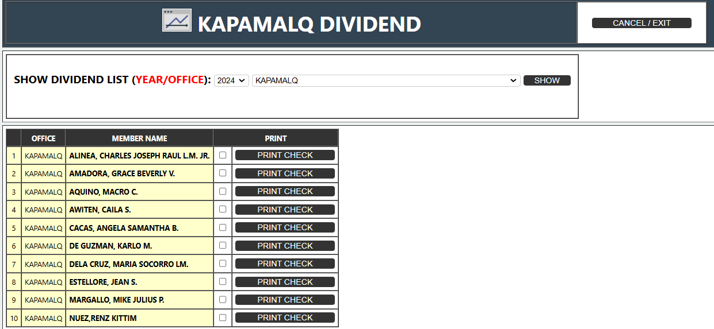
XXX. Cash Receipt
- To access the cash receipt page, click the CASH RECEIPT button.
- To start, manually encode all the fields for the cash receipt details.
- Once done, click the ADD CASH RECEIPT button.
- In order to view if the encoded information is correct, select the MONTH and YEAR, then click VIEW FULL/VERIFY to verify the cash receipt.
- To export the report, click the EXPORT button.
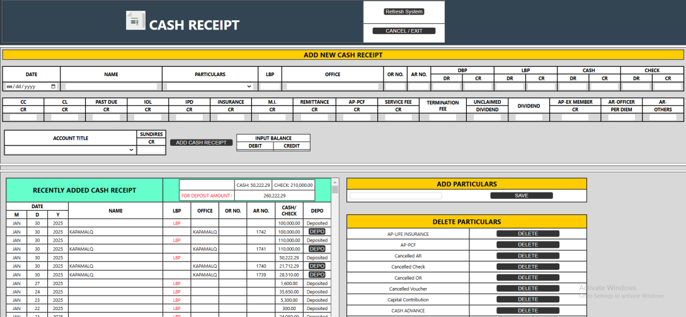
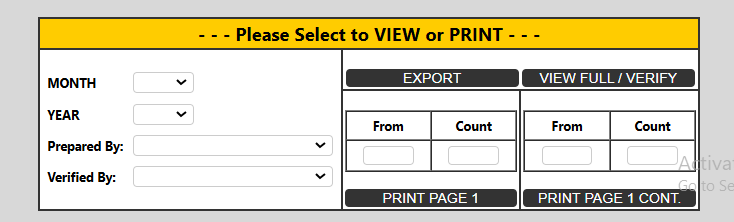
XXXI. Edit Cash Receipt
- To access the edit/delete receipt page, click the EDIT/DELETE RECEIPT button.
- To modify the cash receipt, type in the OR/AR NUMBER or NAME.
- Click the SEARCH button to proceed. Once there, the user can now modify the details of the Cash Receipt.

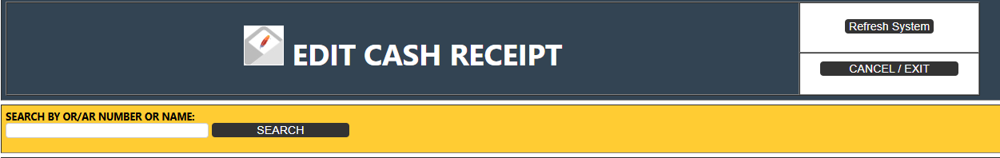
XXXII. Cash Disbursement
- To access the cash disbursement page, click the CASH DISBURSEMENT button.
- To start, manually encode all the fields for the cash disbursement details.
- Once done, click the ADD DISBURSEMENT button.
- In order to view if the encoded information is correct, select the MONTH and YEAR, then click VIEW FULL/VERIFY to verify the cash disbursement.
- To export the report, click the EXPORT button.

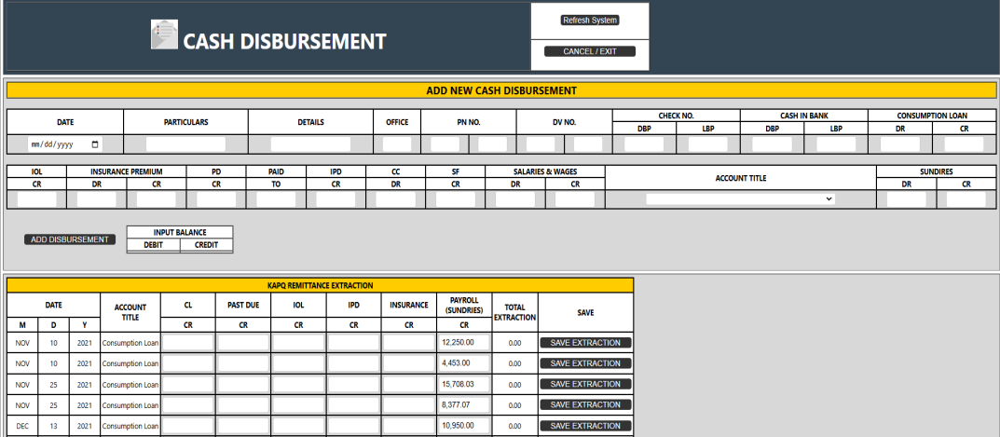
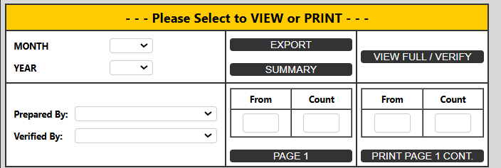
XXXIII. Edit Cash Disbursement
- To modify the disbursement voucher, type in the DIV NUMBER.
- Click the SEARCH button to proceed. Once there, the user can now modify the details of the Disbursement Voucher.
XXXIV. Adjustments
- To access the adjustments page, click the ADJUSTMENTS button.
- Select the MONTH then YEAR from the dropdown menu, then click the SEARCH button to continue.
- In order to add new other adjustments, manually encode the details then click the ADD ADJUSTMENT button. Entries can also be modified by clicking the EDIT/DELETE button.
- The adjustments will appear at the bottom of the page categorized in three tabs, namely MEMBERS ADJUSTMENT, OFFICE ADJUSTMENT and ACCOUNTING ENTRIES.
XXXV. Edit Request
- To access the edit request page, click the EDIT REQUEST button.
- Select the particulars from the dropdown menu. Encode the remarks for the said particulars.
- Click the SUBMIT REQUEST button to proceed.
- Once done, the accountant will approve the edit request.
- After approval, click DONE.
- For the reporting, select the date covered and then click the PRINT button.

XXXVI. SOA Summary
- To access the SOA summary page, click the SOA SUMMARY button.
- Select the MONTH, YEAR and SOA TYPE from the dropdown menu.
- Click the SEARCH button to continue. This will display the Statement of Accounts of the offices.

XXXVII. CC – SOA per Office
- To access the CC SOA per Office page, click the CC-SOA PER OFFICE button.
- Select the OFFICE, MONTH and YEAR from the dropdown menu.
- Click the SEARCH button to continue. This will display the Capital Contribution of the members per office.
XXXVIII. CL – SOA per Office & EL – SOA per Office
- To access either the CL or EL SOA per Office, click either the CL or EL SOA PER OFFICE button.
- Select the OFFICE, MONTH and YEAR from the dropdown menu.
- Click the SEARCH button to continue. This will display the details of the members per office that availed the regular loan.
NOTE: The same process is done in the EL-SOA PER OFFICE page.

XXXIX. Create Voucher
- To access the create voucher page, click the CREATE VOUCHER button.
- To create the disbursement voucher, account entries must be encoded manually.
- Once done, click the CALCULATE button to compute the account entries.
- After getting the computation, click the SAVE button.
XL. Voucher List
- To access the voucher list page, click the VOUCHER LIST button.
- The list/print disbursement voucher page displays and prints the current disbursement vouchers.
XLI. Remittance Reports
- To access the remittance reports page, click the REMITTANCE REPORTS button.
- To display the report for the particular month, click the SELECT OR NUMBER dropdown menu. Each OR number represents a particular month.
- To add a new remittance, select the desired month, year and OR number. Once done, click the ADD NEW REMITTANCE button.

XLII. Past Due Reports
- To access the past due reports page, click the PAST DUE REPORTS button.
- The loan past-due master list shows all the members with their loan past their due dates.

XLIII. Trial Balance
- To access the trial balance page, click the TRIAL BALANCE button.
- Select the MONTH and YEAR and click the SEARCH button.
NOTE: The trial balance displays a summary of all financial transactions per account. The system generates a trial balance that summarizes all recorded financial transactions, including cash receipts, cash disbursements, and journal entries, with corresponding account balances.

XLIV. SOA of TB Accounts
- To access the SOA of TB Accounts page, click the SOA of TB ACCOUNTS button.
- The schedule of Trial Balance accounts serves as the reports of the statement of accounts. To view the annual reports, select the desired year and click the SEARCH button to proceed.

XLV. Add Account Title
- To access the Add Account Title page, click the ADD ACCOUNT TITLE button.
- To add a new account title, fill out the field manually.
- Once done, click the SAVE button.
- To edit the account title, manually edit the fields and click the SAVE button in the update column.
XLVI. Financial Statements
- To access the financial statements page, click the FINANCIAL STATEMENTS button.
- Select the MONTH and YEAR from the dropdown menu, then click the SEARCH button.
- Select from the Consolidated Statement of Condition and print the desired choice.

XLVII. Payroll
- To access the payroll page, click the PAYROLL button.
- Select first the period and then the year.
- Click the SEARCH button to continue.
NOTE: The payroll report is used in order to view the payroll of KAPAMALQ staff.

XLVIII. Statement of Deductions
- To access the statement of deductions page, click the STATEMENT OF DEDUCTIONS button.
- The statement of deductions displays the KAPAMALQ staff and their deductions. To access it, select the period and the year from the dropdown menu.
- Click the SEARCH button to continue.
XLIX. Scanned Files
- To access the scanned files, click the SCANNED FILES button.
- The scanned files serve as the digital archive of different documents.
L. Renew List
- To access the Renew List page, simply click the RENEW LIST button.
- The renew list displays all the names of members who are planning to renew their existing loans.


LI. Amort List
- To access the Loan Amort List page, simply click the LOAN AMORT LIST button.
- To start, select the office and click the SEARCH button. The loan amort list will display all the members that have availed either the REGULAR LOAN or EMERGENCY LOAN.

LII. Membership List
- To access the Membership List page, simply click the MEMBERSHIP LIST button.
- The membership list page displays all registered members starting from the most recent ones.

LIII. KYC Summary
- To access the KYC Summary page, simply click the KYC SUMMARY button.
- The KYC or Know Your Customer Summary is the list of all the members of KAPAMALQ with their respective details.

LIV. Update Board Members
- To access the update board members page, simply click the UPDATE BOARD MEMBERS button.
- The UPDATE BOARD MEMBERS page shall be used if there are newly appointed board members. If there are new members, the staff can simply select the position and replace the name. Once done, click the SAVE button.
Frequently Asked Questions (FAQ)
General Questions
Q: What is the KAPAMALQ System?
The KAPAMALQ System is designed to manage core functions such as member loan withdrawals, savings tracking, transaction records, archival of records and loan portfolio oversight. It streamlines administrative and financial tasks for the association.
Q: What are the system requirements for installing the KAPAMALQ System?
- Operating System: Windows 10 (64-bit) version 1909 or later, or Windows 11
- CPU: Intel Core i5 (8th generation or newer) or AMD Ryzen 5 equivalent
- Storage: 256GB total capacity (50GB free space recommended)
- RAM: 8GB minimum, 16GB recommended
- Network: Local Area Network (LAN) with 100 Mbps minimum speed (1 Gbps recommended)
Installation and Setup
Q: How do I set up the KAPAMALQ System?
Refer to the Installation Instructions section in this manual. It includes steps for configuring network settings, installing WampServer, MySQL, and Visual C++ Redistributable, and verifying the setup.
Q: What should I do if the WampServer doesn't start?
- Check for port conflicts. Ensure no other applications are using the designated port (e.g., 1962).
- Verify Apache configuration and make sure all dependencies, like Visual C++ Redistributable, are installed.
Q: How do I access the system for the first time?
After installation, open a web browser and navigate to http://localhost:1962/. Log in using the credentials provided by your administrator.
Using the System
Q: How do I add a new member?
Navigate to the "Members" section in the system interface and click "Add Member." Fill in the required details and save the entry.
Q: How can I process a loan application?
Go to the "Transactions" section and select "Loan." Enter the member details, loan amount, and repayment terms, and then submit for approval.
Q: Where can I view all active accounts?
Use the "Account Master List" under the "Members" section to access a list of all active accounts.
Q: What if an erroneous entry has been made?
To rectify an erroneous entry, submit an edit request to the system administrator or designated personnel.
Troubleshooting
Q: What should I do if I forget my admin password?
Use the MySQL console to reset the password:
UPDATE users SET password=PASSWORD('new_password') WHERE username='admin';Replace new_password with your desired password.
Q: I see a "Database connection failed" error. How do I fix it?
- Ensure the MySQL server is running.
- Check that the database credentials in the system configuration match your MySQL setup.
Q: My reports are not generating properly. What should I check?
- Ensure all required fields are filled before generating reports.
- Verify that the system server is operational and error-free.
Printing and Reporting
Q: How can I print a member's passbook?
Navigate to the "Passbook Printing" option under the "Members" section, select the member's account, and proceed with printing.
Q: Why are my reports missing data?
Incomplete reports often result from missing information in required fields. Verify all inputs before generating the report.
Performance and Optimization
Q: The system is running slowly. What can I do to improve performance?
- Upgrade your hardware to meet the recommended specifications (16GB RAM and 1 Gbps network speed).
- Close unnecessary background applications to free system resources.
Q: How do I prevent frequent crashes or freezes?
Regularly clear system logs and backups to free up storage. Ensure your operating system and hardware are up-to-date.
Maintenance and Updates
Q: How do I start WampServer automatically after a system reboot?
Configure WampServer to run at startup via Task Scheduler or set the Apache and MySQL services to "Automatic" in the Services management console.
Q: What should I do if data inconsistencies occur after a system update?
- Run a database integrity check using MySQL Workbench.
- Use the "Edit Request" section to review flagged transactions and correct inconsistencies.
Troubleshooting
This section provides solutions to common issues users may encounter while using the KAPAMALQ System. Follow the steps below to resolve problems effectively.
1. Common Installation Issues
Problem: WampServer or MySQL Not Starting
Cause:
- Port conflict with another service.
- Missing dependencies like Visual C++ Redistributable.
- Incorrect configuration.
Solution:
- Verify that no other service is using the selected port (e.g., 1962): open Command Prompt and run
netstat -a -n -o | find "1962". If another process is using the port, terminate it or select a different port in the WampServer configuration. - Ensure Visual C++ Redistributable is installed by downloading it from the Microsoft Download Center.
- Recheck configuration files — Apache: ensure correct
Listendirectives; MySQL: validate database access credentials.
Problem: Unable to Access http://localhost/
Cause:
- Firewall blocking the application.
- Misconfigured network settings.
Solution:
- Allow Apache Server through the firewall: go to Windows Security > Firewall & network protection, click Allow an app through the firewall and enable Apache for both Private and Public networks.
- Verify network settings: IPv4 Address
192.168.1.111, Subnet Mask255.255.255.0, Default Gateway192.168.1.1.
2. Login and Account Access Issues
Problem: Forgot Admin Credentials
Solution:
- Open MySQL Console via WampServer.
- Run the following command to reset the password:
UPDATE users SET password=PASSWORD('new_password') WHERE username='admin'; - Replace new_password with the desired new password.
Problem: Regular Users Unable to Log In
Cause:
Inactive user accounts or incorrect credentials.
Solution:
- Log in as an administrator.
- Navigate to the "Members" section and ensure the user account is active.
- Reset user passwords if necessary.
3. System Errors
Problem: PHP Errors or Blank Pages
Cause:
- PHP errors not displayed.
- Configuration issues.
Solution:
- Enable error reporting in the
php.inifile:display_errors = On
- Restart WampServer.
- Reload the webpage to view error logs and fix issues as indicated.
Problem: "Database Connection Failed" Error
Cause:
- MySQL server not running.
- Incorrect database credentials.
Solution:
- Start MySQL via WampServer.
- Confirm credentials in the application configuration file match the MySQL setup.
4. Loan and Transaction Issues
Problem: Loan Application Details Not Saving
Cause:
- Insufficient user permissions.
- Database configuration issues.
Solution:
- Verify user roles and permissions in the "Members" section.
- Check the database table for corruption using MySQL Workbench.
Problem: Incorrect Totals in Loan Summaries
Solution:
- Use the "Post Audit" functionality to recalculate totals.
- Manually verify transaction records for discrepancies.
5. Reporting and Printing Issues
Problem: Reports Not Generating or Incomplete
Solution:
- Ensure all required fields are completed before submission.
- Check server logs for missing data errors.
Problem: Printing Errors in Passbook or Declaration Form
Solution:
- Confirm printer settings are correct.
- Use the "Slip Print/Edit/Delete" functionality to reprint the document.
6. Performance and Optimization
Problem: System Running Slowly
Cause:
- Insufficient hardware resources.
Solution:
- Upgrade to recommended specifications: 16GB RAM, 1 Gbps network speed.
- Close unnecessary applications to free up resources.
Problem: Frequent Crashes or Freezes
Solution:
- Clear unnecessary logs and backups to free up storage space.
- Verify that the database server has adequate disk space.
7. System Maintenance
Problem: Unable to Start Services after a Reboot
Solution:
- Open Services (
services.msc). - Locate
wampapache64andwampmysqld64. - Set both services to Automatic startup type.
Problem: Data Inconsistency after Updates
Solution:
- Run database integrity checks using MySQL Workbench.
- Review the "Edit Request" section for flagged issues.
8. Special Character Issues
Problem: Special characters cause errors or unexpected behavior
Cause:
The system may not handle or sanitize certain special characters (e.g., @, #, ', or &) in user inputs or data fields.
Solution:
- Avoid using special characters in input fields unless explicitly allowed (e.g., passwords or specific text fields). Report the specific character causing the issue to the administrator.
- Temporary workaround: replace special characters with alternatives or omit them when entering data.
9. Contribution Adjustment Issue
Problem: Salary increase affects the contribution, retroactively altering previous salaries and their respective contributions
Cause:
The system automatically adjusts contributions based on the new salary, even for historical records.
Solution:
- Manually check and verify contributions via the payroll system.
- Correct any discrepancies in historical records manually to ensure accurate reporting.
- Escalate to the administrator if automated adjustments persist to review and potentially fix system logic.